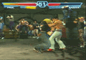
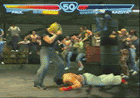
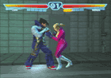
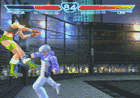
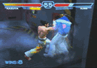
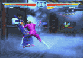
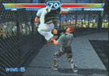

- Index News Archive Site Themes Premium Zaibatsu
- Games Tekken 7 Tekken Tag 2 Tekken 6 Tekken 5:DR Tekken 5 Tekken 4 Tekken Tag Tekken 3 Tekken 2 Tekken Tekken Advance
- Forums Control Panel Zaibatsu Community Tekken 7 Tournament Calendar Match Finder Areas PSN Players XBL Players Advanced Search Register
- Gallery Official NAMCO Art Galleries Wallpaper Galleries PlayStation3 Themes Tekken Fan Art
- Info Zaibatsu FAQs Contact Staff Submitting FAQs Submitting Art Site Map Terms of Use Privacy Policy
- Wiki Tekken 7 Tekken Tag 2 Tekken Tag 2 Prologue Tekken 6
- Legend
- Home
- Tekken 4
- Game System
- Wall Basics
Wall Basics
One of the most important new aspects of Tekken 4 is the addition of walls. Walls can be your best friend or your worst
enemy. We'll take a look at all the different types of wall impacts and how to escape the resulting wall stuns to avoid
further damage.
Standing Power Hits
First of all the one you best avoid, the power hit wall stun. The result of a powerful hit while you are standing
and positioned near a wall. This results is a long standing type stun (either with your back to the wall or facing the
wall) that is not escapable and gives your opponent plenty of time to get a free hit or even start a juggle if you were
positioned at a sharp angle to the wall. In the scenario below Paul could easily add another qcf+2 or a d+1+2. Once you have
fallen to the ground you can use the basic tech roll at ground impact or elect to use get ups from full grounded position.
|  | |||
|  |
On the other hand power hit wall impacts are initiated from a further distance result in the regular wall stun and
can be tech rolled after wall impact or at ground impact by tapping any of the attack buttons. Hitting 1 or 2 at the appropriate
time will result in a wall tech spin to your characters right, 3 or 4 results in a wall tech spin to your characters left.
Juggle Hits
A second type of attack causing wall impacts are juggle hits. This can either be a mid air juggle hit or a follow
up attack to the inescapable wall hit mentioned earlier. The wall stun resulting from either one of these wall impacts
can easily escaped by tapping any button as you normally would to tech roll when hitting the ground. Once again hitting 1
or 2 will result in a wall tech spin to your characters right, 3 or 4 results in a wall tech spin to your characters left.
This tech can easily work to your advantage if your opponent commits to another attack, often you will be rewarded with
a free side juggle starter or even a perfect backthrow setup.
As mentioned previously you can also use the basic ground tech roll once you hit the ground after the wall stun animation
or use get ups from a fully grounded position. The same applies to wall impacts from juggle hits.
As usual, everything is a guessing or strategy game in Tekken. Since you are vulnerable during the wall tech spin
and you do not particular want to end up on the ground near a well you also have to option to start blocking once you've
hit the wall during a juggle. This is done by just holding B or D/B on the controller depending on if you want to block
high or low.
 |
On to a few less common types of wall impacts. Every once in a while you will find yourself hitting the wall with your
back exposed to the opponent. Obviously blocking is out of the question here, but all is not lost. Tapping or hold back
on the joystick at the moment of wall impact will result in an instant wall tech spin. Unfortunately you cannot really
control the direction of the spin and it is mainly based on the angle at which you hit the wall. In some rare cases this
could end up creating a corner type trap if the opponent is following up with a fast string before the wall tech spin
is complete. You can also hold down back to instantly turn around and crouch. Just a barrage of jabs will not do the
trick however since they are too slow and you will be able to complete your wall tech spin and get out of trouble.
Even more rare are wall side impacts. When you find yourself being juggled from the side or the juggle starter causes an
off axis float you will most likely end up hitting the wall with your side. You cannot wall tech spin and the next attack
will usually break you away from the wall for some more juggle damage. Or in the scenario below Nina could easily connect
a f+1+2 since she is already recovering before the opponent even hits the wall.
|  | |||
Finally, keep in mind that your feet have to touch the ground before you can wall tech spin or think about blocking
against the wall. So it is possible to deal out inescapable wall damage at the end of juggles using fast guaranteed string
attacks such as Lee's 4,4,4. If the first hit of such strings impacts while your character is still sliding down the wall
there is no escaping or blocking possible. This applies to any type of escapable wall impact we discussed to this point.
|  | |||
Wall Throws
A few select throws in Tekken 4 can result in wall impacts if you are within range. Some cause power hit type wall impacts
with your back to the wall (ex. King f,hcf+1) or facing the wall (ex. Julia 2+4~B). Others cause quick drop to the ground
wall impacts (ex. Paul f,f+1+2) or upside down wall impacts (ex. Nina u/f+1+2), non of these impacts allow a wall tech
spin, wall blocking or ground tech roll afterwards.
Position Change
Maybe the second most important new feature in Tekken 4 is the position change. It can get you out of wall trouble quickly
or setup some fast and easy damage by pushing your opponent into the wall. A position change into the wall will create
a small window at which time you cannot block (from our experience this is 10 frames most likely). Depending on the character
this can be very rewarding, for example a guaranteed string such as Kazuya's 1,2,2 can deal some good wall damage or better
yet a Yoshimistu f,f+4 will result in a power hit wall stun. Non guaranteed strings such as Jin's 1,2,4 on the other hand
can be blocked before the 4.
|  |
All is not lost for characters that don't have fast high damage guaranteed strings. Try to set up a position change
at the maximum distance from the wall, so the wall impact occurs at the very end of the position change animation. This
will allow your character to already start recovery before the opponent actual hits the wall for the minor stun. This
effectively increase the frame window to about 14-15 frames allowing slower hits to be guaranteed. Nina for example can
get a 3,4 which gives a power hit wall stun or Paul can sneak in a guaranteed d+1+2.
|  | |||
Wall Jump
The other alternative to get out of potential wall trouble is to use the universal wall jump. While the animation varies
from character to character, the command is the same for everybody (b,b,u/b with your back near a wall). This technique is fairly
slow and also leaves you open to attacks since the animation is quite long, a well timed jab could even lead to a combo,
so be careful using this.
|  |